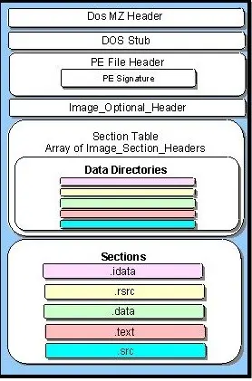

CS 3710
Introduction to Cybersecurity
Aaron Bloomfield (aaron@virginia.edu)
@github | ↑ | 
Viruses
Introduction
Computer Virus
- Malware that:
- Alters an executable file and inserts its own code in there
- Often a binary executable, but can be a script, batch file, etc.
- At some point during execution, control is transferred to the virus
- Or at least the transfer of control is attempted…
- Often (but not always!) has a payload
- Alters an executable file and inserts its own code in there
Why Windows as a target?
- Most viruses affect Windows – but why?
- Market share!
- As of September 2018, Windows has 82% of the market, Mac OS X 13%, Linux 2% (source)
- That is home computer share, and does not include, say, Amazon’s clusters
- Android is 25% of all viruses, but that is not included above
- As of September 2018, Windows has 82% of the market, Mac OS X 13%, Linux 2% (source)
- Relative weak security, compared to Linux and Mac OS X
- Main user often has admin access
Virus arms race
- The loop:
- Virus writers will develop a creative new way to “hide” from the anti-virus scanners
- Anti-virus scanners will adapt, and be able to detect the new virus
- Rinse, lather, repeat
- This played out especially in the 1980’s and 1990’s
- Nowadays malware has moved on to other infection methods
File Formats
Windows PE file format

- Parts:
- DOS header
- DOS stub
- PE header
- Where Windows
looks…
- Where Windows
- PE sections
- .data section
- .rdata section
- .text section
Image from here
Linux ELF Files

- Similar in concept to PE files
- No DOS header, though!
- Same common sections
- .data, .text, .rodata, etc.
- Meant as a generic format
- Runs on Linux, Playstation,
many UNIX OSes,
Android (sorta), etc.
- Runs on Linux, Playstation,
- Image from Wikipedia
PE Sections
- .text: Code
- .data: Initialized data
- .bss: Uninitialized data
- .rdata: Const/read-only (and initialized) data
- .edata: Export descriptors
- .idata: Import descriptors
- .reloc: Relocation table
- .rsrc: Resources (icon, bitmap, dialog, …)
(shamelessly copied from here)
Linking a PE file

- Compiler produces .o files
- Each .o has its own sections
- Linker combines into the PE
- Linker: the last compiler stage
Linking a PE file
- Why the dead spaces?
- Alignment restrictions
- Perhaps 128 byte boundaries
- Some linkers make PE file align to page boundaries
- Memory pages are much bigger (1 Kb to 4 Kb)
- This simplifies the loader’s job
- But makes PE file bigger on disk
PE file expansion

PE file expansion
- Why the expansion?
- Memory will have different alignment restrictions than the file on disk
- Loader increases dead spaces to use page boundaries, while alignment is to a lesser size (e.g. 128 bytes) in the PE file on disk
- Page sizes are 1 Kb to 4 Kb
- The OS can place restrictions on pages (read-only, no-execute, etc)
- Like unpacking a suitcase…
Virus Infections
File infection modalities
- Beginning of .text section with Destructive Overwrite
- Random Location in .text section with Destructive Overwrite
- Will not always execute!
- Appending Viruses
- Multiple Techniques
- Cavity Viruses (possibly fractionated)
- Compressing Viruses
- Entry-Point Obscuring (EPO) Viruses
- Including IAT replacement
The “tricky jump”
- The most common technique to transfer control to a virus
- Recall that the
retassembly command pops an address from the stack and then jumps there
The “tricky jump”
- Insert virus code somewhere
- At the end, in a cavity, etc.
- Find a suitable
retin some subroutine - Overwrite the last few instructions in that subroutine with:
push [virus code address]ret
- Saved instructions are put into the virus code
- At the end, prior to the ret
Detecting a tricky jump
- This is very easy to find!
- Just look for a
pushfollowed immediately by aret- No compiler would ever compile assembly that does that
- Just look for a
- Virus writers got creative:
- Added a bunch of nops between (
add eax, 0, etc.)
- Added a bunch of nops between (
- Anti-virus researchers figured out how to detect those
- So better stealth was needed…
Basic Virus Stealth
Viruses must be stealthy
- Otherwise you immediately know something is wrong, and you fix it, removing the virus
- Thus, the virus must:
- Quickly execute its payload (and possible other infections)
- Jump back to the “expected” behavior when done
Entry-Point Obscuring (EPO) Viruses
- An EPO virus obscures its own entry point by finding a call instruction in the targeted PE file and “hijacking” the call so that the virus code is called instead
- Thus, we find a
callopcode and replace the target with the virus address - A good EPO virus will save all registers, and then restore them on the way out
Detecting Call-Hijacking Viruses
- Check if any of the
calltargets are outside the .text section of code - The .reloc section is examined by modern anti-virus software to see if it looks like a legitimate .reloc section
- Code patterns such as saving state, tricky jumps, etc., can be detected in the .reloc section
Calling library functions
- When your binary code calls a library function
- such as
printf(), or<<oncout, etc.
- such as
- The program consults the Import Address Table (in Windows)
- aka the .dynsym section in Linux
- aka the LC_DYLD_INFO section in Mac OS X
- And looks up the address (in the libc library) for
printf() - The loader patches the address for
printf()(and other methods) into the IAT when the program starts up
EPO Viruses: IAT Replacement
- A virus can change the address in the IAT to that of the virus code
- It saves the “real” address and jumps there when done
- Several function pointers can be saved in the virus body, then replaced with pointers to the virus code
- After the virus code is memory-resident, it can restore the IAT in memory so that the API is preserved and stealth is maintained
Advanced Virus Stealth
Anti-disassembly techniques
- Prevent a disassembly (i.e., printout) to hinder analysis
- Examples:
- Encrypt the virus (machine) code (next slide)
- Obfuscated computation (next next slide)
- Using checksums (next next next slide)
- Compressed code (like encrypted viruses)
Example: Cascade Virus
- The simple decryptor of Cascade, circa 1990:
lea si,Start ; start of encrypted code
; (computed by virus)
mov sp,0682h ; length of encrypted code (1666 bytes)
Decrypt:
xor [si],si ; xor code with its address
xor [si],sp ; xor code with its inverse index
inc si ; increment address pointer
dec sp ; decrement byte counter
jnz Decrypt ; loop if more bytes to decrypt
Start: ; virus code body- Note that one of the
xorcommands is xor’ing it with the address, which will change with each infection- Thus, pattern matching won’t find the code!
- But pattern matching can find the decryptor…
Obfuscated Computation
- Example from Szor text, p. 223 (section 6.2.3):
- Straightforward code to write 256 bytes into a file:
mov cx, 100h ; 100h = 256 bytes to write
mov ah, 40h ; 40h = DOS function number
int 21h ; Invoke DOS handler- Convoluted code to do the same thing:
Checksums
- Instead of:
for (each prototype in DLL export table)
if (0 == strcmp(name,"GetFileHandle(int)"))
infect(current export table address);
endforwhich has the subroutine name clearly visible, use:
Anti-debugging techniques
- Prevent tracing the code in a debugger
- Techniques:
- Hook interrupts 1 and 3 (next slide)
- Pre-compute a checksum of code, so if it’s modified (by a debugger placing an interrupt there), it can choose not to execute
- Detect debugger changes to the stack (next next slide)
- Use the stack pointer as a counter for a decryption routine
Hooking interrupts
- There are interrupts for single-stepping (INT 1) and breakpoints (INT 3)
- A debugger will “register” (aka “hook”) the interrupt
- This means telling the CPU to execute a particular address of code when that interrupt is called
- It will then overwrite the instruction to break at with
INT 3- Once in the handler, the original instruction is restored, and the debugger pauses at a break point
Hooking interrupts, cont’d
- So a virus can put its code as an interrupt handler for either, and then call the interrupt directly
- The virus won’t work under a debugger, then!
Detecting Stack Changes
- Without single-step debug state changes, a location on the stack will remain unchanged until an instruction changes it
- But will be changed by the debugger after every instruction during single-step debug
- To detect this:
Anti-emulation techniques
- Prevent emulation, either in a full virtual environment (such as VirtualBox) or just a regular emulator
- Techniques:
- Attempt to throw exceptions
- Emulators have a hard time determining exactly when an exception will occur
- Use long idle loops
- Takes longer in emulators
- Be a time or logic bomb
- Won’t always work, then!
- Attempt to throw exceptions
Anti-heuristic techniques
- A heuristic is an algorithm for determining if there is a virus
- Something that can find if a virus exists (by a tricky jump, say), if not necessarily the exact virus
- Techniques:
- EPO viruses
- Re-arrange PE files so the virus is not “appended” anymore
Anti-goat techniques
- A goat file (from the concept of sacrificial goats) is a dummy file of known content whose infection will signal the presence of a virus
- Scattered around the disk in various file types that are prone to infection, e.g. .exe, .vbs, etc.
- Viruses examine files for goat file characteristics:
- Lots of no-ops and do-nothing instructions
- Clusters of files with sequential numbers in their names, e.g. abcd0001.vbs, abcd0002.vbs, etc.
Retroviruses
- Malware that attacks the defenses
- In biology, that’s the immune system, such as what HIV does
- For computers, that’s the anti-virus software
- Techniques:
- Direct attack on the anti-virus software (rename the executable, kill the process, etc.)
- Affect the integrity database
- Deter anti-virus use with a “warning”
Even More Advanced Virus Stealth
Encrypted viruses
- Encrypted viruses started appearing in the late 1980’s
- One could not pattern match on the virus body…
- … since part of the encryption was the address in the executable, which would vary with each different file infected
- So one had to mutate the decryptor
- This was all to prevent pattern matching detection
Encryptor mutation types
- Three types:
- Oligomorphic have a pre-set number of different encryptors (say, a few dozen)
- Polymorphic can permute the encryptor into millions or billions of variations
- Metamorphic mutate the virus body into countless variations
- Thus, no need for encryption!
Assembly code permutation
- Add nop instructions:
nop;add rax, 0;shr rax, 0; etc. - Instructions that modify registers that are not used by the code
- Instructions that have a cumulative zero net effect:
inc raxfollowed bysub rax, 1 - Re-ordering of instructions
- Register replacement
Oligomorphic viruses
- Memorial was a Windows 95 oligomorphic virus that generated 96 different decryptors, choosing one at replication time
- Detecting 96 different patterns is an impractical solution for virus scanners that must deal with thousands of viruses; pattern database size explosion would result
- It inserted junk instructions at various points in the decryptor code
Polymorphic viruses
- First one was in 1990: V2PX or 1260 (because it was only 1260 bytes!)
- Created by an anti-virus researcher as a proof-of-concept
- Thus, it had no payload
- Created by an anti-virus researcher as a proof-of-concept
- Instructions were in three groups; within each group the instructions could have any order
- A limited number of junk instructions could be inserted
The 1260 Virus Decryptor
- One instance of a decryptor:
; Group 1: Prolog instructions
mov ax,0E9Bh ; set key 1
mov di,012Ah ; offset of virus Start
mov cx,0571h ; byte count, used as key 2
; Group 2: Decryption instructions
Decrypt:
xor [di],cx ; decrypt first 16-bit word with key 2
xor [di],ax ; decrypt first 16-bit word with key 1
; Group 3: Decryption instructions
inc di ; move on to next byte
inc ax ; slide key 1
; loop instruction (not part of Group 3)
loop Decrypt ; slide key 2 and loop back if not zero
; Random padding up to 39 bytes
Start: ; encrypted virus body starts here1260 Permutations
- Group sizes were 3, 2, 2: total of 24 orderings of instructions
- Could choose around a hundred thousand junk instructions
- A limit of about 15 total junk instructions could be placed in 11 locations: several thousand possibilities
- This yields around a billion variants
- And in only 1260 bytes of (machine) code!
Mutation Engines
- Creating a polymorphic virus that makes no errors is really hard
- Especially for the average virus writer
- A few virus writers started creating mutation engines, which can transform an encrypted virus into a polymorphic virus
- The Dark Avenger mutation engine, also called MtE, was the first such engine (DOS viruses, summer 1991, from Bulgaria)
Early Metamorphics: Regswap
- A Win 95 metamorphic virus from Dec, 1998
- Metamorphism was only register replacement:
pop edx pop eax
mov edi,0004h mov ebx,0004h
mov esi,ebp mov edx,ebp
mov eax,000Ch mov edi,000Ch
add edx,0088h add eax,0088h
mov ebx,[edx] mov esi,[eax]
mov [esi+eax*4+1118],ebx mov [edx+edi*4+1118],esi
etc. etc.- Not much of an obstacle with wildcards:
- Both variants match 5? B?04000000
Metamorphic Engine Example
- The Evol virus of July, 2000
- Compare different generations, after several generations of evolution:
A future generation:
Evol Example cont.
- An even later generation shows the constant mutation starting:
mov ebx,5500000Fh ; 3rd gen., constant has changed
mov dword ptr [esi],ebx
pop ebx ; junk
push ecx ; junk
mov ecx,5FC0000CBh ; constant has changed
add ecx,F191EBC0h ; ECX now has original value
mov dword ptr [esi+0004],ecx- As it replicates, the metamorphic engine makes just a few changes each generation, but the AV scanner code patterns change drastically
- Eventually, all constants will be mutated many times
Other approaches
- Zperm: lots of jumps, so the reordering can be done easily
- Zmorph: lots of small body-polymorphic subroutines that build the virus on the stack
- Zmist: disassembles the PE file, inserts its code inside, and then reassembles the PE file
- One of the most complex viruses ever written
- Simile: benign payload, but had 14,000 lines of the metamorphic engine
What this led to…
- … is that people gave up using pattern matching on viruses
- Instead, started using emulation and heuristics
Virus Creation Laboratory
A virus creation kit, which does exactly what it sounds like it does

NGVCK

Next Generation Virus Creation Kit (2001)
- A VB script
- Similar to VCL, but could infect PE files
- Advanced assembly source morphing engine
Anna Kournikova virus
- Most known virus created with the VBSWG virus creation kit
- People executed a AnnaKournikova.jpg.vbs e-mail attachment
- … because they wanted to see pictures of Anna Kournikova
- Which then e-mailed itself out to everybody in their Outlook address box
- Author, 20-year old Jan de Wit created it, even though he did not know how to write a program
Why we still study viruses today
- Being as this all happened decades ago
- The techniques used in these viruses is present in modern malware
- Among many other techniques…